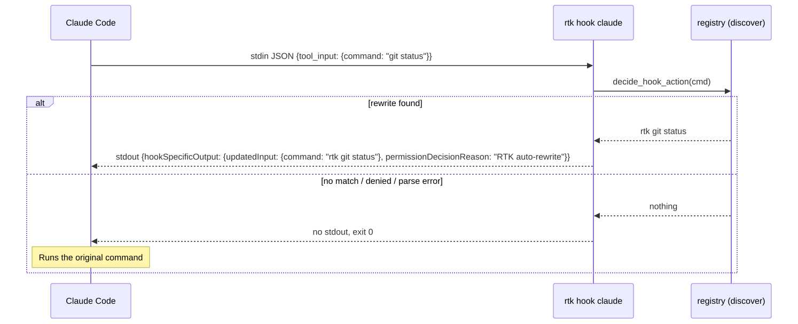

Hook & Rewrite¶
The agent never types rtk. It types git status, and a hook rewrites the command
just before it executes. This is what makes RTK zero-effort: adoption is 100 % instead of
depending on the model remembering to prefix commands.
Two strategies¶
| Auto-rewrite (default) | Suggest | |
|---|---|---|
| How | Hook rewrites the command before execution | Hook emits a hint message; the model decides |
| Adoption | ~100 % | ~70-85 % |
| Context cost | none | small |
| Good for | production use | learning / auditing |
Anatomy of the Claude Code hook¶
Claude Code fires a PreToolUse event for every Bash tool call. On a current install the
hook entry in ~/.claude/settings.json is simply rtk hook claude: the binary reads the JSON
payload from stdin, decides, and answers on stdout. (An older shell script,
hooks/claude/rtk-rewrite.sh, does the same job by shelling out to rtk rewrite.)

The response shape (from pre_tool_use_rewrite_output in src/hooks/hook_cmd.rs):
{
"hookSpecificOutput": {
"hookEventName": "PreToolUse",
"permissionDecisionReason": "RTK auto-rewrite",
"updatedInput": { "command": "rtk git status" },
"permissionDecision": "allow"
}
}
permissionDecision is only present when RTK is allowed to decide; see
Permissions.
The non-blocking guarantee¶
A broken hook must never stop the agent from working. So the hook processors in
hook_cmd.rs return Ok(()) on every path: success, no match, JSON parse error,
unexpected input. Returning Err would propagate to main(), exit non-zero and block the
command - explicitly called out as a violation in src/hooks/README.md.
Other consequences of that rule:
- Empty stdin or a leading BOM is tolerated; unparsable JSON logs to stderr and exits cleanly.
- The response is written to stdout first. Audit and decision logging (a SQLite write with a 5 s busy timeout) happens afterwards so lock contention can never delay the tool call.
- In the shell variant, a missing
jq, missingrtk, orrtk < 0.23.0allexit 0with a warning.
Exit codes of rtk rewrite¶
Shell-based hooks delegate to the subcommand rtk rewrite "<cmd>" and branch on its exit code:
| Exit | stdout | Meaning | Hook does |
|---|---|---|---|
| 0 | rewritten command | Rewrite found and an allow rule matched | Rewrite and auto-allow |
| 1 | - | No RTK equivalent | Pass through unchanged |
| 2 | - | A deny rule matched | Pass through; Claude Code's own deny handles it |
| 3 | rewritten command | An ask rule matched, or no rule matched | Rewrite but let Claude Code prompt |
Observed on a live install: rtk rewrite 'git status' prints rtk git status and exits 3
(no explicit allow rule), while rtk rewrite 'echo hi' prints nothing and exits 1.

Where the logic lives¶
All rewrite intelligence is in Rust (src/discover/registry.rs and rules.rs). Hooks are thin
delegates that only translate between an agent's JSON dialect and RTK's verdict. Adding a rule
therefore never requires touching a hook script.